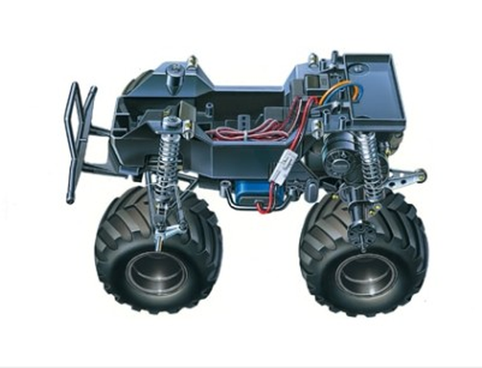

タミヤ CW-01

引用元画像：タミヤ公式サイト
📋 基本情報
| メーカー | タミヤ（Tamiya） |
|---|---|
| 機種名 | CW-01 |
| 型番 | 58347など |
| 発売時期 | 2005年12月17日 |
| 価格 | 15,180円（三菱パジェロ） |
| 生産状況 | 一部現行販売中 |
| カテゴリー | ラジコンカー（1/10スケール 電動RCカー） |
| サブカテゴリー | コミカルRV（ビッグタイヤ仕様） |
📏 シャーシスペック
| 全長 | 385mm |
|---|---|
| 全幅 | 240mm〜290mm（車種により異なる） |
| 全高 | 225mm〜255mm（車種により異なる） |
| 車体重量 | 1,560g（RCメカ・バッテリー含まず） |
| ホイールベース | 207mm |
| トレッド | 前後とも195mm |
| タイヤ幅/径 | 前後とも36/94mm（パジェロ）、直径115mm（ランチボックス） |
| フレーム | ABS樹脂製ボックスタイプ |
⚙️ 駆動系
| 駆動方式 | 後輪2輪駆動（2WD） |
|---|---|
| デフギヤ | 3ベベルデフ |
| ギヤ比 | 14.7:1 |
| モーター | 540タイプ |
| スピードコントローラー | ESC仕様（別売） |
| ギヤボックス | 密閉式（砂や小石の侵入を防ぐ） |
🔧 サスペンション
| 形式 | フロント：スイングアクスル独立 リヤ：ローリングリジッド |
|---|---|
| ダンパー | CVAオイルダンパー（コイルスプリング付き） |
| ステアリング | 2分割タイロッド式（ボールアジャスター付き） |
| ウイリーバー | リヤに装備（ウイリー走行が可能） |
💡 特徴
シンプルで組み立てやすいビッグタイヤ仕様の2WDシャーシ
- 入門用としても最適な2輪駆動シャーシ
- ボックスタイプのメインフレームを採用
- 直径115mmの中空タイヤで悪路でもダイナミックな走り
ウイリー走行も楽しめる
- リヤエンドにウイリーバーを装備
- グリップのよい路面で急加速すれば前輪を持ち上げてのウイリー走行が可能
- 転倒する心配もなく、楽しい走りを実現
タフで信頼性の高い構造
- 強度の高いボックスタイプのメインフレーム
- 密閉式ギヤボックスでオフロードにつきものの砂や小石の侵入を防ぐ
- スムーズなコーナリングを生み出すデフギヤを内蔵
- CVAオイルダンパー装備で悪路での走破性向上
豊富な車種バリエーション
- ランチボックス（58347）
- ミッドナイトパンプキン
- メルセデス･ベンツ ウニモグ406 ウイリー（58557）
- 三菱 パジェロ（58727）- 現行販売中
🔧 ぽすとそに工房での修理実績
修理難易度
★★☆☆☆
ものによっては古い機種なので、パーツの流用が効きにくいかもしれません。
よくある故障・注意点
- 古い個体はパーツ入手が困難な場合がある
- ギヤボックスの密閉性が経年劣化で低下することがある
- 大径タイヤの空気抜けや破損に注意
- ウイリーバーの破損（ウイリー走行時の転倒による）
- CVAダンパーのオイル漏れ
修理のポイント
- 2WD構成でシンプルなため、初心者でも修理しやすい
- ボックスタイプフレームで整備性が良好
- 現行販売中のモデル（パジェロ）はパーツ入手が容易
- ギヤボックスの定期的な清掃とグリスアップが重要
- ウイリーバーの調整でウイリー走行を楽しめる
その他の特徴
- コミカルなボディデザインが特徴
- ファミリーで楽しめる親しみやすい走り
- ボールベアリングへの交換が可能
- カラーシャーシ（ホワイト、レッド）も別売で用意